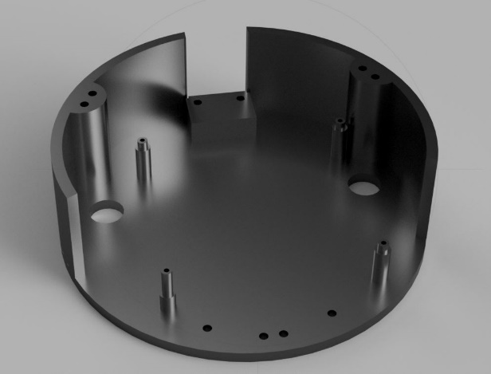
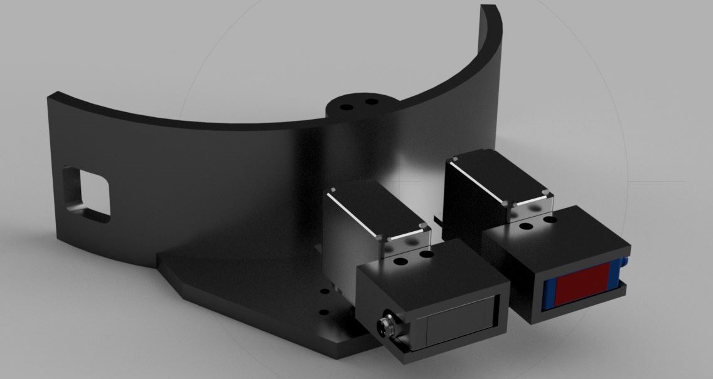

In order to accomplish the tasks in the Home Mini Size category, our team managed to create a compact and efficient robot, meant to help the people around. We successfully integrated systems that performs the 3 basic tasks: robot guide test, follow me test and pick and place test. Because our team always comes up with solutions related to the current problems that people face, this time, we decided to help the sick elderly people. Our robot can interact with these people and help them take their medicines on a certain time. It can bring a specific drug depending on the day or time and bring a glass of water to help the elderly who cannot move easily and need treatment.
From the beginning we wanted to create a robot with an original design, so we made a lot of parts ourselves, using the 3D printing technique. Regarding the electrical part of our robot, we chose to have one single mainboard designed by us, fact that allowed us to implement our own components. Needless to say, creating all these parts on our own significantly reduced the cost of producing such a robot, so it could be affordable to any person if it will go into production. For the 3D printed components, we used Galaxy Black Prusament PETG from Prusa Research, because of its high impact strength and durability.
By using the Amazon Alexa Echo and building an Alexa skill, our robot can interact with people, especially with those who cannot move easily. It can bring them a certain medicine and a glass of water in order to help them take their treatment.
This task is accomplished using a Logitech C920 web camera, connected directly to the Raspberry PI 4. Using an algorithm (presented in software section), the robot follows the black cylinder. For the 90 degrees turns, our team used the sensor from the previous task to determine the direction of the followed robot.
The web camera and the fixed sensor make possible the detection of a bottle. The robot stops in front of it at a distance lower than 100 mm. Using a 3D printed arm, the robot picks the bottle then transports it to the indicated place. The arm is an open source project from EEzyrobots, and it uses four micro servomotors. We adapted this arm to our needs, so we modified the base of the arm and we designed a different gripper that allows picking the bottle. Also, we used only three micro servomotors, because the purpose of the fourth one was to rotate the whole arm, and it was unnecessary in our case. Also, this arm is used to move the chair and we plan to adapt it to move the mystery object too.
For this task, we used three distance sensors (Wenglor, P1KY001), of which two of them are mounted on servomotors to be able to detect objects in a larger area. The third sensor is fixed and it is used to detect objects behind the robot. These sensors are used to determine the distance between them and other objects by means of transit time measurement. These types of sensors have a great accuracy and a high switching frequency, using laser class 1 – safe for human eye. In order to rotate those two mobile sensors, we used two goBILDA servomotors controlled from our mainboard. To move the robot to a certain area on the table, we used the motor encoders, the gyroscope and the accelerometer (for rotations).
Our team embraced the design of a circular 3 omnidirectional wheels robot, even though the motion control system is far more complicate then the classic motion control used for 4 wheels robots or 2 wheels ones. We chose this option, because we wanted our robot to be able to move in any direction without changing its position. Also, we opted for this type of robot, because we had to use only 3 DC motors for the moving, so the power consumption is lower than in the 4 wheels robots.
On a circular 3D printed base (210 mm diameter) we mounted 3 Pololu 50:1 Metal Gearmotors (12 V) using 3 supports fixed on the base with screws. The 3 motors used for movement are equipped with quadrature encoders, as a result, we know the exact position of the robot on the competition table.
In the following illustration, the desired speed of the robot is represented by the vector in the center of the platform (white line). It has the components vx and vy, these are the two input values for the calculation of the three motor speeds vA, vB and vC.
Wheel A can only contribute to the movement of the robot in the x direction since it is perpendicular to the y axis of the coordinate system. Therefore, vA is equal to vx. Since the wheels are arranged in a circle at a 120° distance from each other, the coordinate systems of Wheel B and C can be made to coincide with that of Wheel A by rotating them by +120° or -120°. The formulas for a rotation of a vector with the components x and y by the angle θ around the origin of a coordinate system are:
x'= x*cos(θ) – y*sin(θ)
y'= x*sin(θ) + y*cos(θ)
However, in our case we only care about the x component, so we apply the first formula for vB and vC:
vB = vx*cos (-120°) - vy*sin (-120°)
vC = vx*cos (120°) - vy*sin (120°)
The brain of our robot is a Raspberry PI 4 (4GB Ram), which is attached to our mainboard with pin headers. This controls 2 DC motor drivers (7A Dual DC Motor Driver from DFROBOT). The drivers use 2 digital pins for the direction control and one analogic pin (PWM) to control the speed of every motor. These drivers are powered from the main 12V battery and as a safety measure we added a 20 A fuse for each driver. The logic voltage for the drivers is 3.3 V. The Raspberry PI generates DMA timed PWM for a high accuracy.
Because we used all the available pins, on the mainboard, we integrated an Arduino UNO in case we want to add other components. In this case, the communication between the Arduino and the Raspberry PI will be serial. Because we need a precise rotation of our robot, we use gyroscope and an accelerometer, which is connected to the Raspberry using I2C protocol. Initially, we designed the mainboard with a special analog to digital converter to read the values from SHARP distance sensors, but we gave up this idea, because the output of these sensors was non-linear and it was very hard to interpret it. On the mainboard, we added 8 servomotors ports with 3 pins: GND, +5V and PWM (software PWM generated by Raspberry PI).
The robot is powered from a 12 V battery and has an emergency switch in case if it is needed to turn it off immediately. The Raspberry PI is powered using a 12 V to 5 V and 2.5 A converter and for Alexa Echo we used a Pololu Adjustable 9-30V Step-Up/Step-Down Voltage Regulator, which is able to provide 15 V continuously (Amazon Alexa requires 15 V in order to operate at normal parameters).
Because the servomotors have a power consumption that can not be provided by the Raspberry intern 5V regulator, we design our own regulator which can provide 5V and 5A. This uses the LM2678 regulator, a 20 uH coil and some electrolytic capacitors for a filtering. This circuit is mounted on the mainboard as a shield, using some spacers. After we read the datasheet for every component, we designed the electrical schematics in Autodesk Eagle, then we created the layout of our printed circuit board.
We chosed to prototype our mainboard with a PCB specialized manufacturer, while the 5V regulator board was made by us using the ultraviolet method.
Next step was the soldering process, which requires an increased attention, because most of the components were SMD-s. The last step regarding the electrical part was testing the functionality of every component. We faced some problems at the DC driver control, but after some measurements we adjusted the PWM signal, such that the speed of each motor is constant.
The layout of the mainboard in Autodesk Eagle
Ultraviolet lamp used to print the traces on the copper board
PCB before etching
We firstly imported the CAD of the motors and based on it designed a mount that could be secured to the base with 4 screws and an extra bracket to secure the motor in place. Next, we created the base of the robot with a radius of 105 mm which is the maximum size our 3D printer can print. To secure the future levels to this one we decided to use 6 long screws that run through the whole height of the robot.
For the second level we started by creating the layer between level 1 and 2 which has 4 mounts for the mainboard and one for a distance sensor. For the second level we started by creating the layer between level 1 and 2 which has 4 mounts for the mainboard and one for a distance sensor.
 This part is the final one and has multiple roles. It holds the battery mount that we designed, the camera, the Alexa and the robot arm. The component has double the number of holes it actually needed because we wanted to be able to change the position of the robot arm, which required all the other components to be moved to new sets of holes.
Copyright ©Herotech 2019-2021 - Template by Inovatik